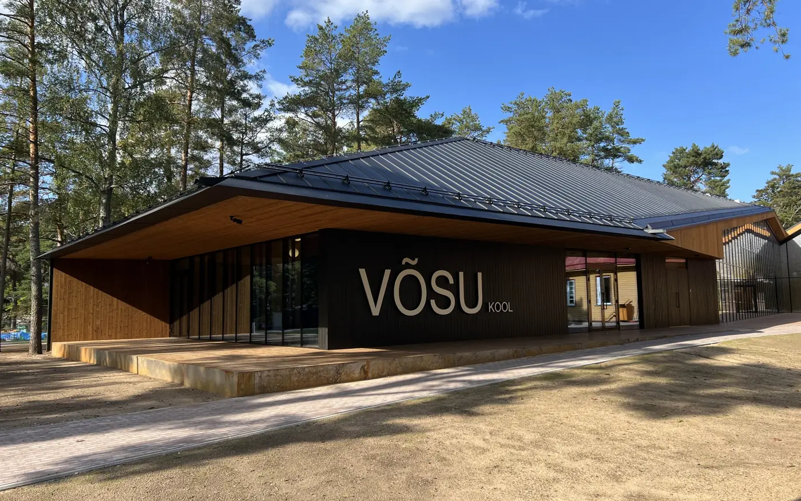
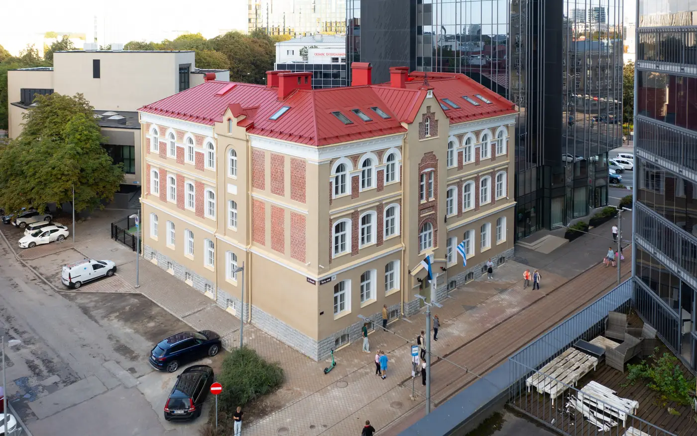
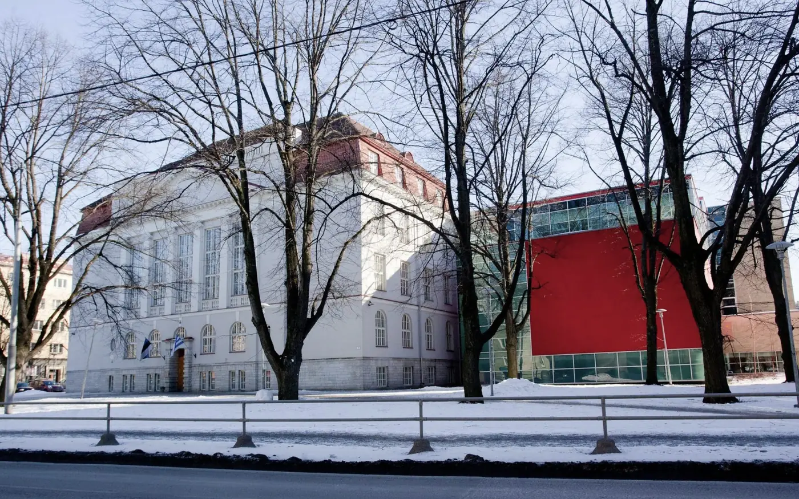
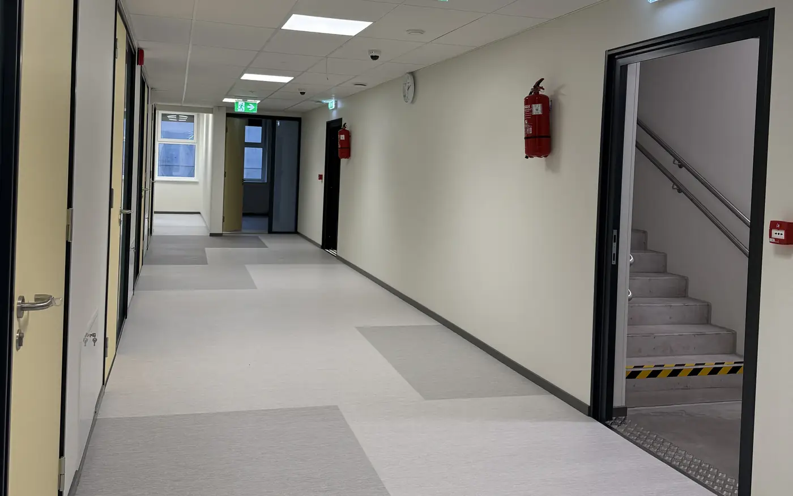
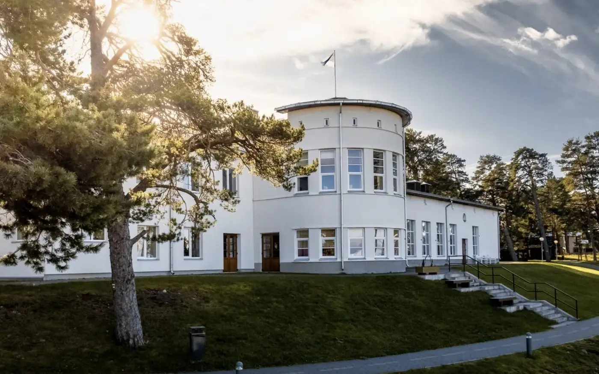
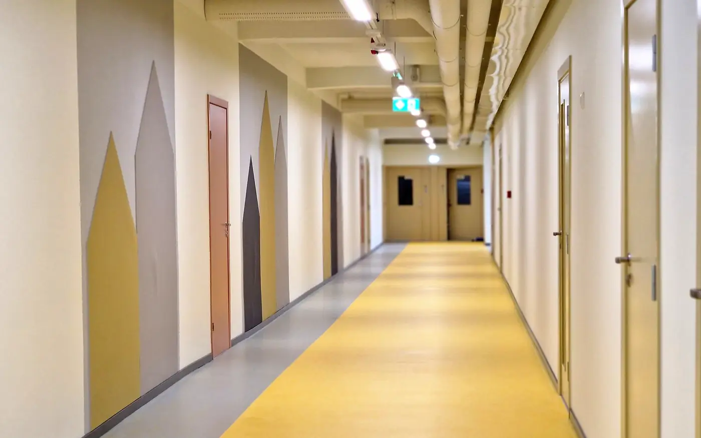
PeatöövõttEhitusProjekteerimine
Peatöövõtja, kes ehitab oma jõududega.
Enska ehitus OÜ ehitab ja rekonstrueerib koole, lasteaedu, ühiskondlikke hooneid, elamuid ja ärihooneid. Era- ja avaliku sektori tellimused aastast 2008.
Võsu põhikool ja lasteaed
Ehitamine, I etapp
- Tellija
- Haljala Vallavalitsus
- Valmimine
- 09.2025
Tallinna 21. kooli algklasside maja
Rekonstrueerimine, projekteerimine ja ehitus
- Tellija
- Tallinna Haridusamet
- Valmimine
- 08.2024
Tallinna 21. kooli ajalooline koolihoone
Juurdeehituse rekonstrueerimine, projekteerimine ja ehitus
- Tellija
- Tallinna Haridusamet
- Valmimine
- 08.2026
Haabneeme kooli juurdeehitus
Projekteerimis-ehitushange
- Tellija
- Viimsi Vallavalitsus
- Valmimine
- 11.2025
Võsu rannaklubi
Renoveerimine
- Tellija
- Haljala Vallavalitsus
- Valmimine
- 11.2025
Maardu gümnaasiumi hoone
Rekonstrueerimine, III etapp
- Tellija
- Maardu Linnavalitsus
- Valmimine
- 09.2025
Viimased objektid
Ettevõte
Põhilised tööd teeme ise. Nii kontrollime iga etappi ja anname tellijale lubadusi, mida suudame täita.
Töötame peatöövõtu meetodil ja oma töötajatega. Ehitaja kaasamine juba projekteerimise algusesse annab läbimõeldud lahenduse, mis mahub eelarvesse ja on hiljem soodsam hooldada.
Ettevõtte põhiväärtus on hästi haritud ja kvalifitseeritud inimesed. Oskame viia elamuarenduse ideest kuni valmis majani.
- 2008ehitusteenus alates aastast
- 39objekti referentside nimekirjas
- ISO9001 ja 14001: kvaliteet ja keskkond
- 5tegevusala majandustegevuse registris
Teenused
Ideest kuni valmis hooneni
Viis teenust, mida saab tellida koos või eraldi.
- 01
Ehitusjuhtimine
Meie põhitegevus: projektide juhtimine peatöövõtu meetodil, sealhulgas projekteerimis-ehitushanked. Sobib tellijale, kes soovib ehitusprotsessis ise aktiivselt osaleda.
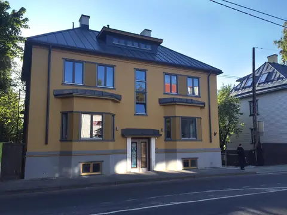
Tulika 34 korter- ja hoovimaja, Tallinn - 02
Üldehituslikud tööd
Põhilised tööd teeme oma jõududega. Nii hoiame hinna mõistlikuna ja kvaliteedi kontrolli all igas ehituse etapis.
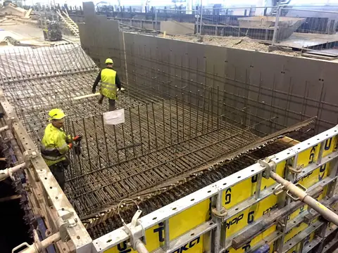
Eelpingetalade liini vundamendid, Punane 18 - 03
Arendusprojektide juhtimine
Juhime tööstus- ja tsiviilehituse projekte koos tellijaga alates ideest ja krundi valikust. Korraldame vajalikud dokumendid, koordineerime eriprojekteerijaid ja osaleme lubade menetluses.
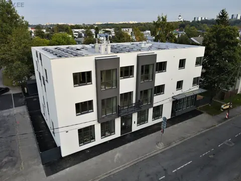
Urva 5 elamu-ärihoone - 04
Eriosade ehitus
Koos pikaajaliste partneritega projekteerime ja ehitame hoone tehnosüsteemid. Hea lahendus algfaasis annab odavama ehituse ja energiatõhusa, vähe hooldust vajava hoone.
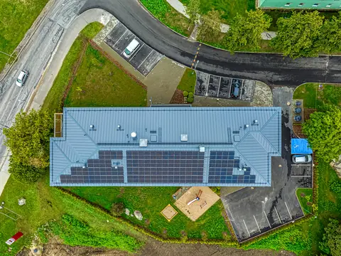
Uue Maardu sotsiaalmaja - 05
Arhitektuurne, tarindite ja eriosade projekteerimine
Projekteerimis- ja projektijuhtimisteenus, et hoone valmiks planeeritud eelarve piires. Ehitaja ja projekteerija koostööst sünnib läbimõeldud ja ümbrusesse sobiv hoone.
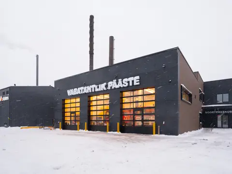
Kostivere päästedepoo ja noorsookeskus
Kuidas töötame
Üks partner kogu teel
Projekteerimis-ehitushanke puhul vastutame nii projekti kui ka ehituse eest.
- 01
Idee ja krunt
Arutame läbi tellija eesmärgid, aitame valida krundi ja sobiva lahenduse.
- 02
Projekt ja load
Koordineerime arhitekti ja eriprojekteerijaid ning osaleme lubade menetluses.
- 03
Ehitus
Ehitame peatöövõtu meetodil, põhitööd oma jõududega, ja kontrollime iga etappi.
- 04
Valmis hoone
Anname hoone üle koos dokumentidega, mida on vaja selle kasutamiseks.
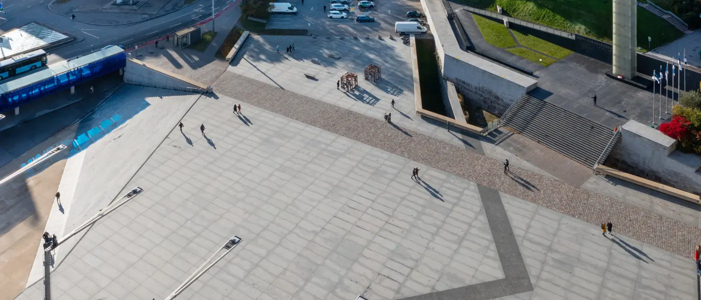
Referentsid
Koolid, ühiskondlikud hooned ja avalik ruum
Valik objekte fotodega. Kõik 39 objekti on tabelis allpool.
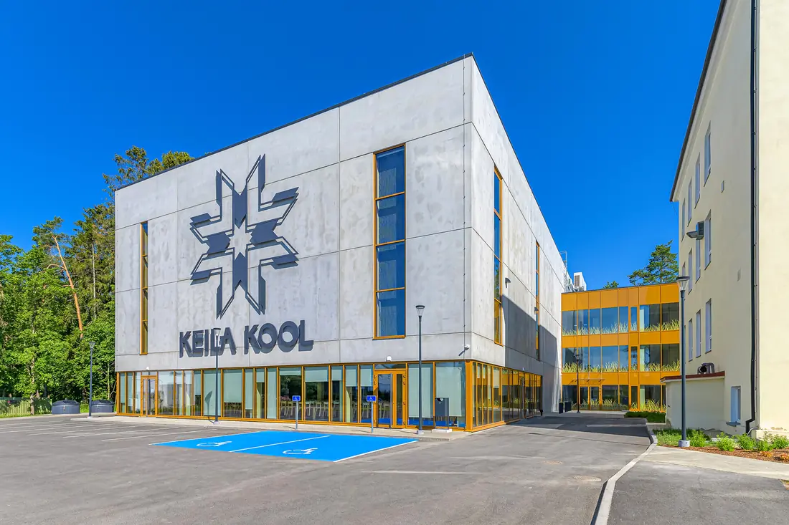
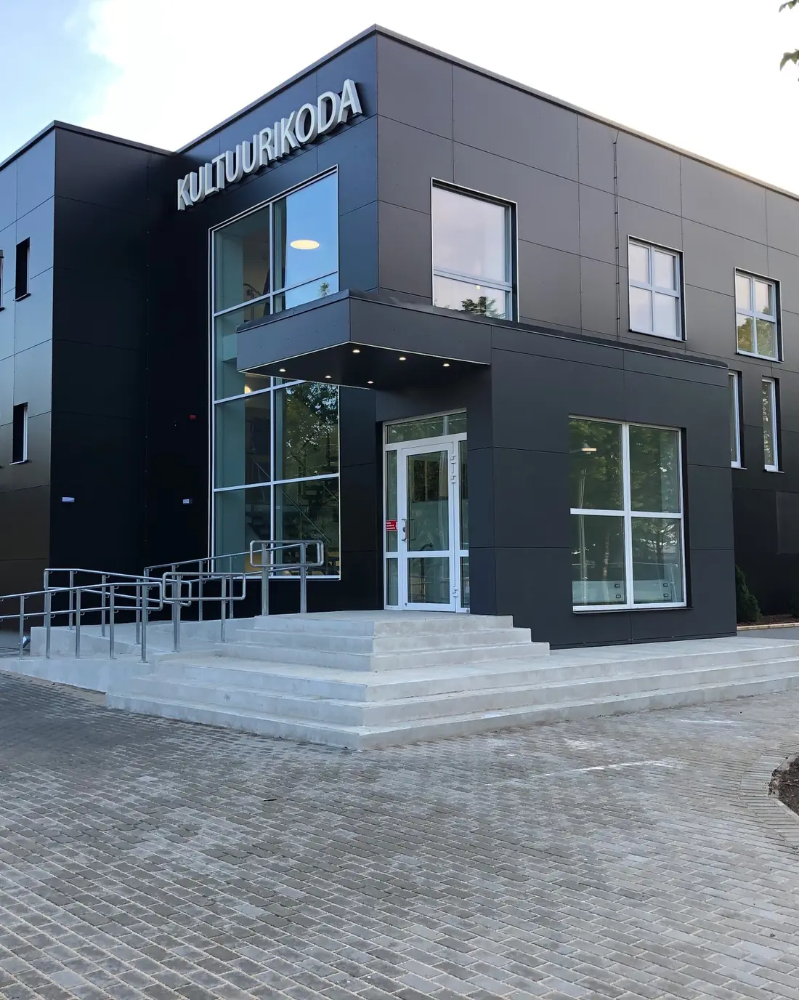
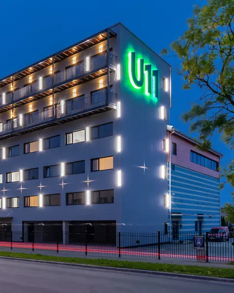
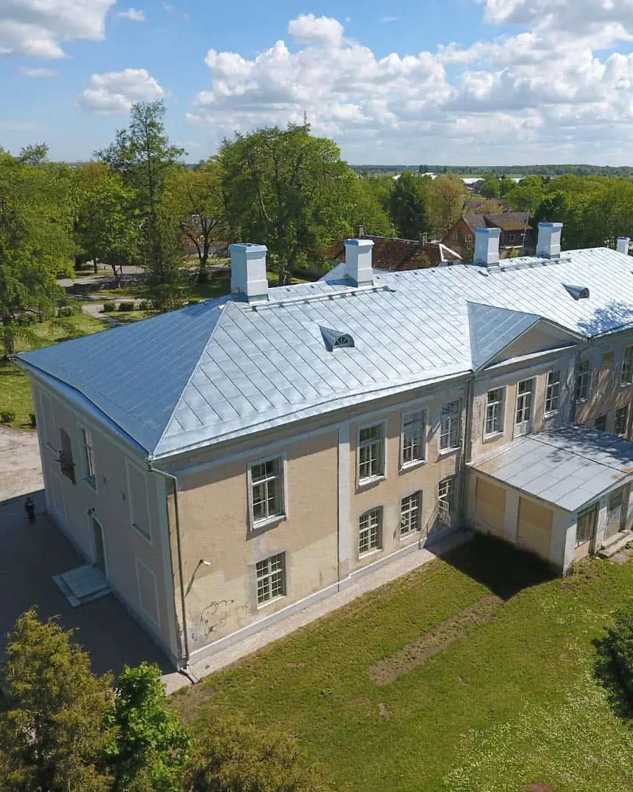
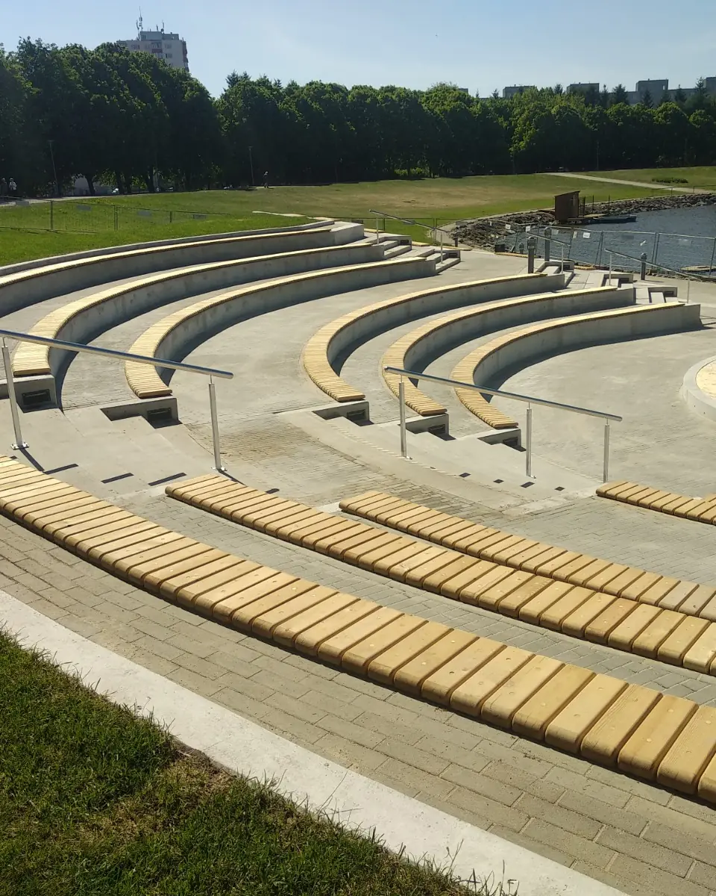
Kõik objektid 39
Asukoht:
- 12.2026Mikuhansu tee 20 tootmisbaas ja büroohooneMikuhansu tee 20Magma AS
- 10.2026Neeme kooli ajaloolise hooneosa projekteerimine ja rekonstrueerimineNeeme tee 4Jõelähtme Vallavalitsus
- 08.2026Tallinna 21. kooli ajaloolise koolihoone juurdeehituse (Raua 6) rekonstrueerimise projekteerimis- ja ehitustöödRaua 6, TallinnTallinna Haridusamet
- 11.2025Haabneeme kooli juurdeehituse projekteerimis-ehitushangeRandvere tee 18, HaabneemeViimsi Vallavalitsus
- 11.2025Võsu rannaklubi renoveerimineMere tn 6, VõsuHaljala Vallavalitsus
- 09.2025Võsu põhikooli ja lasteaia ehitamine (I etapp)Kooli tn 1/1, VõsuHaljala Vallavalitsus
- 09.2025Maardu gümnaasiumi hoone (Ringi tn 64) rekonstrueerimine, III etappRingi 64, MaarduMaardu Linnavalitsus
- 08.2024Tallinna 21. kooli algklasside maja (Tartu mnt 23) rekonstrueerimise projekteerimis- ja ehitustöödTartu mnt 23, TallinnTallinna Haridusamet
- 01.2024Kostivere päästedepoo ja noorsookeskuse projekteerimis- ning ehitustöödUrke 4, KostivereJõelähtme Vallavalitsus
- 10.2023Vabaduse väljaku plaadistuse ja treppide remontVabaduse väljak / Kaarli puiestee, TallinnTallinna Keskkonna- ja Kommunaalamet
- 06.2023Ruhnu Politsei- ja Piirivalveameti ning Päästeameti ühishoone projekteerimis- ja ehitustöödRuhnu külaRiigi Kinnisvara AS
- 06.2023Uue Maardu sotsiaalmaja rajamise projekteerimis- ja ehitustöödKallasmaa tn 9, MaarduMaardu Linnavalitsus
- 05.2023Pirita Majandusgümnaasiumi väliklassi ehitamineMetsavahi tee 19, TallinnPirita Linnaosa Valitsus
- 01.2023Prangli laululava laiendamise ehitustöödKülaplats, Kelnase küla, PrangliViimsi Vallavalitsus
- 07.2022Kopli Püha Jüri kabeli taastamise ja memoriaalala kujundamise ehitustöödPelguranna 2a, TallinnTallinna Linnavaraamet
- 03.2022Sära tee 16 lao- ja büroohooneSära tee 16IK Investment Group OÜ
- 12.2021Keila Pargi 2 koolihoone juurdeehitus (seltsinguleping Mapri Ehitus OÜ / Magma AS)Pargi 2/1, KeilaAS Keila Vesi
- 08.2021Urva 5 elamu-ärihooneUrva 5OÜ Azelta Projekt
- 11.2020Kehra linnaväljaku ehitustöödSpordi 2a, KehraAnija Vallavalitsus
- 08.2020Uuslinna 11 ärihoone juurdeehitusUuslinna 11, TallinnOÜ ZRV
- 11.2019Sillamäe purskkaevKesk 30, SillamäeSillamäe Linnavalitsus
- 07.2019Tapa kultuurikoja projekteerimis- ja ehitustöödTuru 8, TapaTapa Vallavalitsus
- 07.2019Sõjakooli memoriaali rajamineTondi 55, TallinnTallinna Kommunaalamet
- 02.2019Voldemar ja Elfriede Amanda Lenderi mälestusmärgi rajamineTallinna PolitseiaedTallinna Kommunaalamet
- 08.2018Mailase tee 4a paarismajade ehitusMailase tee 4aOmaarendus
- 06.2018Keila Kalda põik 2…34 ridaelamute ehitusKalda põik 2…34, KeilaOÜ Azelta Projekt
- 06.2018Lõuna 50 erahooldekoduLõuna 50OÜ Azelta Projekt
- 05.2018Õismäe tiigi amfiteaterVäike-Õismäe tiigi puhkeala, TallinnTallinna Kommunaalamet
- 11.2017Vabadussõja võidusamba rajatiste rekonstrueerimineHarju 1, TallinnAS Riigi Kinnisvara
- 10.2017Kostivere mõisa salongi rekonstrueerimineMõisa tee 2, KostivereJõelähtme Vallavalitsus
- 10.2017Tallinna Õismäe Vene LütseumSõpruse pst 28, TallinnTallinna Haridusamet
- 10.2017Tallinna Tehnikagümnaasiumi rekonstrueerimineSõpruse pst 187, TallinnTallinna Haridusamet
- 04.2017Eelpingetalade liini vundamentide rajaminePunane 18, TallinnLasbet AS
- 12.2016Veerenni 19Veerenni 19, TallinnEraisik
- 10.2016Kostivere mõisMõisa tee 2, KostivereJõelähtme Vallavalitsus
- 10.2016Loigu tee 6aLoigu tee 6aEraisik
- 08.2016Räägu tn 19 ridaelamute ehitusRäägu 19DK Investeeringud OÜ
- 07.2016Lastekodu 48 Haigekassa bürooruumide rekonstrueerimineLastekodu 48, TallinnOÜ Azelta Projekt
- 09.2015Tulika 34 korter- ja hoovimajaTulika 34, TallinnEstonian Real Estate OÜ
Tellijad meie objektidel
- Magma AS
- Jõelähtme Vallavalitsus
- Tallinna Haridusamet
- Viimsi Vallavalitsus
- Haljala Vallavalitsus
- Maardu Linnavalitsus
- Tallinna Keskkonna- ja Kommunaalamet
- Riigi Kinnisvara AS
- Pirita Linnaosa Valitsus
- Tallinna Linnavaraamet
- IK Investment Group OÜ
- AS Keila Vesi
- OÜ Azelta Projekt
- Anija Vallavalitsus
- OÜ ZRV
- Sillamäe Linnavalitsus
- Tapa Vallavalitsus
- Tallinna Kommunaalamet
- Lasbet AS
- DK Investeeringud OÜ
- Estonian Real Estate OÜ
Kaart
Objektid Põhja-Eestis
Valige kaardil punkt, et näha selle koha objekte tabelis. Kaardist väljas: ühishoone Ruhnu saarel.
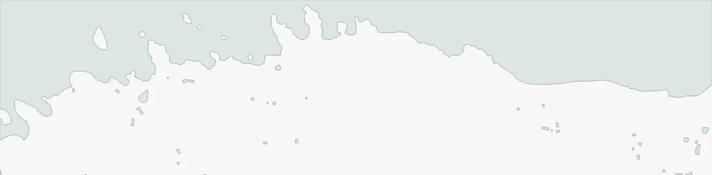
Kaarti saab külgsuunas kerida.
Juhtimissüsteemid
Kvaliteet ja keskkond
ISO järgi
Kvaliteedi- ja keskkonnajuhtimise põhimõtete abil hoiame põhiprotsessid kooskõlas standardite ISO 9001:2015 ja ISO 14001:2015 nõuetega.
- Tööde kvaliteedi tagamine ja kontroll igas etapis.
- Majanduslikult mõistlikud ja keskkonnasõbralikud tehnoloogiad, seadmed ja materjalid.
- Iga töötaja vastutab oma töö tulemuse eest. Pädevust hoiame süstemaatilise koolitusega.
Majandustegevuse register (MTR)
- TEL004471Elektritööd
- EEH011991Ehitamine
- EEP004475Projekteerimine
- EEO004217Omanikujärelevalve
- TGT000637Gaasitööd
Kontaktid
Kirjutage või helistage projektijuhile
Üldküsimused ja pakkumiskutsed: info@enskaehitus.ee
Ilja Jevlanov
Projektijuht
+372 5090899ilja@enskaehitus.eeSergei Karpov
Projektijuht
+372 5130659sergei@enskaehitus.eeAleksandr Gamonovitš
Projektijuht
+372 55630879aleksandr@enskaehitus.eeArtjom Barbõšev
Objektiinsener
+372 55688186artjom@enskaehitus.eeAnatoli Tsvetkov
Objektijuht
+372 58191191anatoli@enskaehitus.eeVladimir Grebenjuk
Objektijuht
+372 53086052vladimir@enskaehitus.ee
E-post
info@enskaehitus.eeKontaktaadress
Veerenni 38b
10138 Tallinn